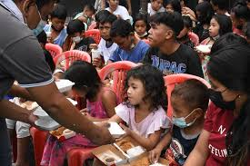
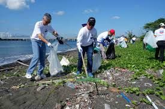
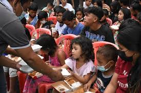
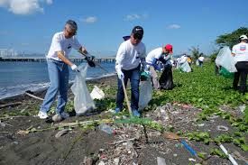

Personal Reflection
Faith grounds me in integrity and responsibility, helping me navigate the digital world
with kindness and truth. By putting God first, I strive to be a beacon of light online,
sharing hope and uplifting my community through my words and actions.
I have learned that growth does not happen all at once but through small experiences every day.
Being a student has taught me patience, responsibility, and the value of hard work.
There are times when I feel pressured or unsure, but I try to stay focused on my goals.
I realize that mistakes are part of learning and not something to be afraid of.
I also learned the importance of managing my time, especially when tasks start to pile up.
Support from my family and friends motivates me to keep going. When I succeed, I feel proud, and when I fail,
I try to reflect and improve. I am still discovering my strengths and weaknesses as a person.
Overall, I see myself growing more mature and confident with each challenge I face.
Community Service
We believe in giving back through initiatives such as:
- Charity drives for the less fortunate
- Church outreach programs spreading the Gospel
- Environmental campaigns promoting stewardship of God's creation
- School volunteer activities fostering community spirit
These efforts reflect our call to serve others with love and compassion, inspired by our faith values.
 



Inspirational Portfolio
- Work Ethic: Dedicated and passionate about my faith journey
- Goals: To exemplify the teachings of "Light of the World" in daily life
- Guiding Values: Honesty, Compassion, and Respect
- Creative Expression: Using art and digital media to spread positivity

Educational or Informational
Online Kindness: Treat others with respect and avoid harmful comments or cyberbullying.
Honesty in Digital Creation: Always credit original sources and avoid plagiarism.
Digital Responsibility: Be mindful of what you share; promote truth and positivity.
Faith Integration: Let your digital presence be a testament to your faith and values.
Faith & Technology
Technology is a powerful tool to spread the message of hope and faith.
By creating inspiring content and sharing uplifting messages online,
we can enlighten others and build a positive digital community.
Faith guides my values and decisions,
while technology helps me learn, communicate, and improve my skills.
When I use technology with faith, I am reminded to use it responsibly, honestly, and for good purposes, not to harm others.
My faith helps me stay grounded so I don’t rely on technology alone.
It reminds me that technology is a tool, not something that should control my life, but something.
I can use to serve others and grow as a person.